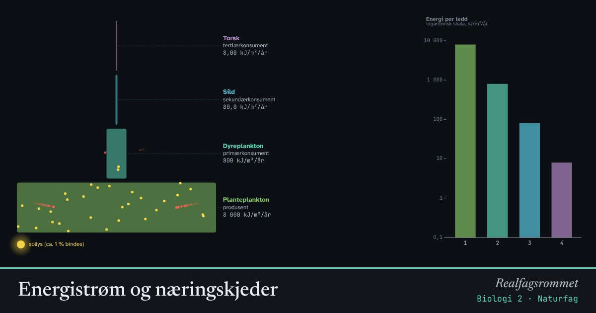

Energistrøm og næringskjeder
Bare en liten del av energien i ett ledd i næringskjeden går videre til neste. Resten brukes til livsprosesser og blir til varme. Derfor er det få rovdyr på toppen.
Start animasjonen
Formler
Om animasjonen
Produsentene binder solenergi i fotosyntesen, men bare omtrent 1 % av sollyset som treffer dem. Planteetere spiser produsentene, rovdyr spiser planteeterne, og så videre.
I hvert ledd brukes mesteparten av energien til celleånding, bevegelse og varme. Noe havner i døde rester som nedbryterne bruker. Ofte går omtrent 10 % videre. Hver gule prikk som når et nytt ledd, er energi som går videre. De røde forsvinner som varme.
Noen miljøgifter, som kvikksølv og PCB, brytes ikke ned og lagres i fettet. De oppkonsentreres for hvert ledd: biomagnifisering. Derfor har toppredatorer som sel og isbjørn høyest konsentrasjon. Her er oppkonsentreringen satt til 5 ganger per ledd.
Prøv dette
- Hvor mye av energien fra produsentene når toppredatoren når hvert ledd gir videre 10 %?
- Hvorfor er det sjelden mer enn fire–fem ledd i en næringskjede?
- Hvorfor er det mer energieffektivt for mennesker å spise planter enn kjøtt?
- Hvorfor bør gravide være forsiktige med å spise mye stor rovfisk?
Kompetansemål
- Naturfag: Miljøgifter i næringskjeder og tiltak for helse og miljø
- Biologi 1: Økosystemer og biologisk mangfold
- Biologi 2: Energistrøm og stoffkretsløp
Mer om økologi og populasjoner
- Rovdyr og byttedyr
- Hvor mange fisk er det i vannet? Fangst–gjenfangst
- Eksponentiell og logistisk vekst
- Miljøgifter hoper seg opp i næringskjeden
- Klimaendringer og artenes utbredelse
- Karbonkretsløpet og CO₂ i atmosfæren
Mer om klima, miljø og bærekraft
- Drivhuseffekten og jordas strålingsbalanse
- Karbonkretsløpet og CO₂ i atmosfæren
- Havforsuring: CO₂ gjør havet surere
- Klimaendringer og artenes utbredelse
- Miljøgifter hoper seg opp i næringskjeden
- Rovdyr og byttedyr
- Grønn kjemi: atomøkonomi
- Årstider, dagslengde og solinnstråling
- Regnskygge og føhn: hvorfor Bergen er våtere enn Oslo
- Flom: regn, jord og asfalt